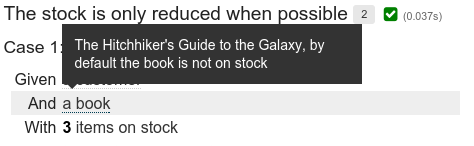

Behavior-Driven Development in
Plain_Java()
Dr. Jan Schäfer
Big Techday 8
June 12, 2015

Why BDD?
Test-Driven Development
@Test
@Transactional
public void shouldInsertPetIntoDatabaseAndGenerateId() {
Owner owner6 = this.clinicService.findOwnerById(6);
int found = owner6.getPets().size();
Pet pet = new Pet();
pet.setName("bowser");
Collection<PetType> types = this.clinicService.findPetTypes();
pet.setType(EntityUtils.getById(types, PetType.class, 2));
pet.setBirthDate(new DateTime());
owner6.addPet(pet);
assertThat(owner6.getPets().size()).isEqualTo(found + 1);
this.clinicService.savePet(pet);
this.clinicService.saveOwner(owner6);
owner6 = this.clinicService.findOwnerById(6);
assertThat(owner6.getPets().size()).isEqualTo(found + 1);
// checks that id has been generated
assertThat(pet.getId()).isNotNull();
}
Typical Tests
- Often hard to understand
- Often contain too many technical details
- Point of the test often hard to grasp
- Often contain code duplication
- Can only be read by developers
Behavior Driven Development
- Behavior is specified in a semi-formal format using the domain language of the product
- Behavioral specifications are exectuable like tests
- Developers and business analysts collaborate when defining the behavior
TDD
Are we building the product right?
BDD
Are we building the right product?
BDD in Java

Feature Files (Gherkin)
ordering.feature
Feature: Ordering
Scenario: Customers can order books
Given a customer
And a book
And 3 items of the book are on stock
When the customer orders the book
Then a corresponding order for the customer exists
Step Implementation (Java)
public class CustomerStepdefs {
@Given("a customer")
public void aCustomer() { ... }
@Given("a book")
public void aBook() { ... }
@Given("(\\d+) items of the book are on stock")
public void nItemsOfTheBookAreOnStock(int nItems) { ... }
@When("the customer orders the book")
public void theCustomerOrdersTheBook() { ... }
@Then("a corresponding order for the customer exists")
public void aCorrespondingOrderForTheCustomerExists() { ... }
}
Problems
High maintainance cost
- Feature files and Code must be kept in sync
- No Programming Language Power in feature files
- Limited IDE support (e.g. no refactoring support)
Observations in Practice
- Low developer acceptance due to higher overhead
- Non-developers rarely write feature files
- Maintaince of feature files has to be done by developers anyway
Other BDD frameworks?
- JBehave: Plain Text + Java (like Cucumber)
- Concordion: HTML + Java
- Fitness: Wiki + Java
- Spock: Groovy
- ScalaTest: Scala
- Jnario: Xtend
Stackoverflow to the rescue!

JGiven
Scenarios in JGiven
import org.junit.Test;
import com.tngtech.jgiven.junit.SimpleScenarioTest;
public class OrderTest extends SimpleScenarioTest<StepDefs> {
@Test
public void customers_can_order_books() {
given().a_customer()
.and().a_book_on_stock();
when().the_customer_orders_the_book();
then().a_corresponding_order_exists();
}
}
Some Facts
- Scenarios are written in a domain-specific, fluent API
- Works with JUnit and TestNG
- Minimizes annotation overhead by deriving most information directly from the source code
Ok, but what about non-developers?
Reports
- Plain Text
- Static HTML
- HTML5 App
- AsciiDoc (Alpha)
Plain Text
Test Class: com.tngtech.jgiven.example.bookstore.OrderTest
Scenario: customers can order books
Given a customer
And a book on stock
When the customer orders the book
Then a corresponding order exists for the customerHTML5 App
Classical BDD vs. JGiven
Classical BDD
Readable Text <-> Code
JGiven
Readable Code -> Readable Report
Experience from Practice
- Experience from over 1 year and in a large Java project
- Over 1300 scenarios have been written so far
- JGiven greatly improves readability and code reuse
- Reduces maintance costs of automated tests (no hard numbers though)
- Widely accepted by developers
- Easy to learn by new developers
- Reports are read by product owner and business analysts
Getting Started
Add JGiven Dependency
- com.tngtech.jgiven:jgiven-junit:0.7.2
- Licence: Apache License v2.0
Extend ScenarioTest*
import com.tngtech.jgiven.(junit|testng).ScenarioTest;
public class SomeScenarioTest extends ScenarioTest<...> {
}Add Stage Types
import com.tngtech.jgiven.junit.ScenarioTest;
public class SomeScenarioTest
extends ScenarioTest<MyGivenStage, MyWhenStage, MyThenStage> {
}Add Test Methods
import org.junit.Test;
import com.tngtech.jgiven.junit.ScenarioTest;
public class SomeScenarioTest
extends ScenarioTest<MyGivenStage, MyWhenStage, MyThenStage> {
@Test
public void my_first_scenario() { ... }
}Write step methods
import org.junit.Test;
import com.tngtech.jgiven.junit.ScenarioTest;
public class SomeScenarioTest
extends ScenarioTest<MyGivenStage, MyWhenStage, MyThenStage> {
@Test
public void my_first_scenario() {
given().some_initial_state();
when().some_action();
then().the_result_is_correct();
}
}
Write Stage Classes
import com.tngtech.jgiven.Stage;
public class MyGivenStage extends Stage<MyGivenStage> {
int state;
public MyGivenStage some_initial_state() {
state = 42;
return this;
}
}Stage Classes
General
- JGiven scenarios are built from stage classes
- Stage classes provide modularity and reuse
- Stage classes are a unique feature of JGiven, not present in any other BDD framework
- Typically a stage class is used for either a Given, When, or Then steps of a scenario
State Transfer

State Transfer
- Fields can be annotated with @ScenarioState
- Values are written and read between stages
- @ProvidedScenarioState, @ExpectedScenarioState as alternative
public class MyGivenStage extends Stage<MyGivenStage> {
@ProvidedScenarioState
int state;
public MyGivenStage some_initial_state() {
state = 42;
return self();
}
}
public class MyWhenStage extends Stage<MyWhenStage> {
@ExpectedScenarioState
int state;
@ProvidedScenarioState
int result;
public MyWhenStage some_action() {
result = state * state;
}
}
Data-Driven Scenarios
Parameterized Step Methods
given().a_customer_with_name( "John" );
Report
Given a customer with name John
Within a scentence?
Given there are 5 coffees left
$ to the rescue!
given().there_are_$_coffees_left( ncoffees );
Parameterized Scenarios
@Test
@DataProvider({
"1, 0",
"3, 2",
"5, 4"})
public void the_stock_is_reduced_when_a_book_is_ordered( int initial,
int left ) {
given().a_customer()
.and().a_book()
.with().$_items_on_stock( initial );
when().the_customer_orders_the_book();
then().there_are_$_items_left_on_stock( left );
}JUnit's Parameterized Runner and Theories are also supported.
Text Report
Scenario: the stock is reduced when a book is ordered
Given a customer
And a book
With <initial> items on stock
When the customer orders the book
Then there are <left> items left on stock
Cases:
| # | initial | left | Status |
+---+---------+------+---------+
| 1 | 1 | 0 | Success |
| 2 | 3 | 2 | Success |
| 3 | 5 | 4 | Success |Derived Parameters
@Test
@DataProvider({"1", "3", "5"})
public void the_stock_is_reduced_when_a_book_is_ordered( int initial ) {
given().a_customer()
.and().a_book()
.with().$_items_on_stock( initial );
when().the_customer_orders_the_book();
then().there_are_$_items_left_on_stock( initial - 1 );
}Derived Parameters
Text Report
Scenario: the stock is reduced when a book is ordered
Given a customer
And a book
With <initial> items on stock
When the customer orders the book
Then there are <numberOfItems> items left on stock
Cases:
| # | initial | numberOfItems | Status |
+---+---------+---------------+---------+
| 1 | 1 | 0 | Success |
| 2 | 3 | 2 | Success |
| 3 | 5 | 4 | Success |Different Cases
@Test
@DataProvider({ "3, 2, true",
"0, 0, false" })
public void the_stock_is_only_reduced_when_possible(
int initial, int left, boolean orderExists) {
given().a_customer()
.and().a_book()
.with().$_items_on_stock( initial );
when().the_customer_orders_the_book();
if ( orderExists ) {
then().a_corresponding_order_exists_for_the_customer();
} else {
then().no_corresponding_order_exists_for_the_customer();
}
}Different Cases
Text Report
Scenario: the stock is only reduced when possible
Case 1: initial = 3, left = 2, orderExists = true
Given a customer
And a book
With 3 items on stock
When the customer orders the book
Then there are 2 items left on stock
And a corresponding order exists for the customer
Case 2: initial = 0, left = 0, orderExists = false
Given a customer
And a book
With 0 items on stock
When the customer orders the book
Then there are 0 items left on stock
And no corresponding order exists for the customerDifferent Cases
Notes
- Even if possible: Try to avoid structural different scenario cases
- Better extract a method and create two scenarios or use parameter formatting
Additional Features
Parameter Formatting
- Default: toString()
- @Format( MyCustomFormatter.class )
- @Formatf( " -- %s -- " )
- @MyCustomFormatAnnotation
Example
@OnOff
@Format( value = BooleanFormatter.class, args = { "on", "off" } )
@Retention( RetentionPolicy.RUNTIME )
@interface OnOff {}Apply to parameter
public SELF the_machine_is_$( @OnOff boolean onOrOff ) { ... }Use step
given().the_machine_is_$( false );
Report
Given the machine is off
Tables as Parameter
- @Table to mark step parameter to be tables
- Must be the last parameter
- Must be an Iterable of Iterable, an Iterable of POJOs, or a single POJO
Tables as Parameter
Using Arrays
SELF the_following_books_are_on_stock( @Table String[][] stockTable ) {
...
}- First row is the table header
Tables as Parameters
Using Arrays
@Test
public void ordering_a_book_reduces_the_stock() {
given().the_following_books_on_stock(new String[][]{
{"id", "name", "author", "stock"},
{"1", "The Hitchhiker's Guide to the Galaxy", "Douglas Adams", "5"},
{"2", "Lord of the Rings", "John Tolkien", "3"},
});
when().a_customer_orders_book("1");
then().the_stock_looks_as_follows(new String[][]{
{"id", "name", "author", "stock"},
{"1", "The Hitchhiker's Guide to the Galaxy", "Douglas Adams", "4"},
{"2", "Lord of the Rings", "John Tolkien", "3"},
});
}Tables as Parameters
Text Report
Scenario: ordering a book reduces the stock
Given the following books on stock
| id | name | author | stock |
+----+--------------------------------------+---------------+-------+
| 1 | The Hitchhiker's Guide to the Galaxy | Douglas Adams | 5 |
| 2 | Lord of the Rings | John Tolkien | 3 |
When a customer orders book 1
Then the stock looks as follows
| id | name | author | stock |
+----+--------------------------------------+---------------+-------+
| 1 | The Hitchhiker's Guide to the Galaxy | Douglas Adams | 4 |
| 2 | Lord of the Rings | John Tolkien | 3 |Tables as Parameters
List of POJOs
- Field names: header
- Field values: data
SELF the_following_books_are_on_stock( @Table List<BookOnStock> books) {
...
}Tables as Parameters
Single POJO
SELF the_following_book(
@Table(includeFields = {"name", "author", "priceInEurCents"},
header = VERTICAL) Book book) {
...
}
Text Report
Given the following book
| name | Lord of the Rings |
| author | John Tolkien |
| priceInEurCents | 0 |
@BeforeScenario and @AfterScenario
public class GivenSteps extends Stage<GivenSteps> {
@ProvidedScenarioState
File temporaryFolder;
@BeforeScenario
void setupTemporaryFolder() {
temporaryFolder = ...
}
@AfterScenario
void deleteTemporaryFolder() {
temporaryFolder.delete();
}
}
Scenario Rules
public class TemporaryFolderRule {
File temporaryFolder;
public void before() {
temporaryFolder = ...
}
public void after() {
temporaryFolder.delete();
}
}
public class GivenSteps extends Stage<GivenSteps> {
@ScenarioRule
TemporaryFolderRule rule = new TemporaryFolderRule();
}
@AfterStage, @BeforeStage
public class GivenCustomer extends Stage<GivenSteps> {
CustomerBuilder builder;
@ProvidedScenarioState
Customer customer;
public void a_customer() {
builder = new CustomerBuilder();
}
public void with_age(int age) {
builder.withAge(age);
}
@AfterStage
void buildCustomer() {
customer = builder.build();
}
}
Tags
@Test @FeatureEmail
void the_customer_gets_an_email_when_ordering_a_book() {
...
}With Values
@Test @Story( "ABC-123" )
void the_customer_gets_an_email_when_ordering_a_book() { ... }@NotImplementedYet
- Marks whole tests or single step methods as not implemented yet
- Tests will be ignored and specially marked in the report
@Hidden
- Marks methods to not appear in the report
- Useful for technically necessary methods that should not appear in the report
@Hidden
public SELF doSomethingTechnical() { ... }Extended Descriptions
@ExtendedDescription("The Hitchhiker's Guide to the Galaxy, "
+ "by default the book is not on stock" )
public SELF a_book() { ... }HTML Report

HTML Report
Attachments
public class Html5ReportStage {
@ExpectedScenarioState
protected CurrentStep currentStep; // provided by JGiven
protected void takeScreenshot() {
String base64 = ( (TakesScreenshot) webDriver )
.getScreenshotAs( OutputType.BASE64 );
currentStep.addAttachment(
Attachment.fromBase64( base64, MediaType.PNG )
.withTitle( "Screenshot" ) );
}
}HTML Report

Conclusion
Pros
- Developer-friendly
- High reuse due to modularity of scenarios
- Plain Java, no additional programming language needed
- Very easy to learn
- Very easy to integrate into existing test infrastructure
- Readable reports for non-developers
BDD without the hassle!
Cons
- Non-Developers cannot directly write executable scenarios
- But acceptance criteria can be easily translated into JGiven scenarios
- Generated reports can be read by non-developers
Thank You!
@JanSchfr
jgiven.org
github.com/TNG/JGiven
 Slides are licensed under a Creative Commons Attribution-ShareAlike 4.0 International License.
Slides are licensed under a Creative Commons Attribution-ShareAlike 4.0 International License.
Backup
Why snake_case?
- Better readable
- thisCannotBeReadVeryEasilyBecauseItIsCamelCase
- this_can_be_read_much_better_because_it_is_snake_case
- Words can be written in their correct case
- given().an_HTML_page()
- Report generation works better with snake_case